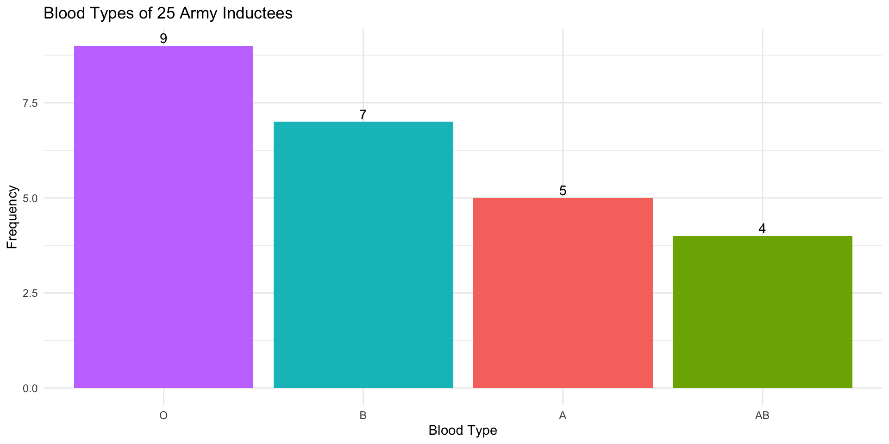
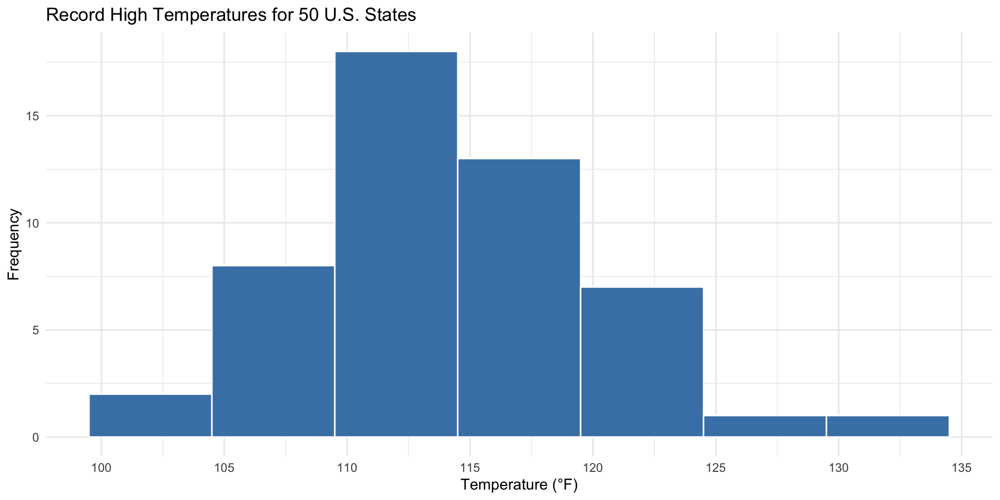
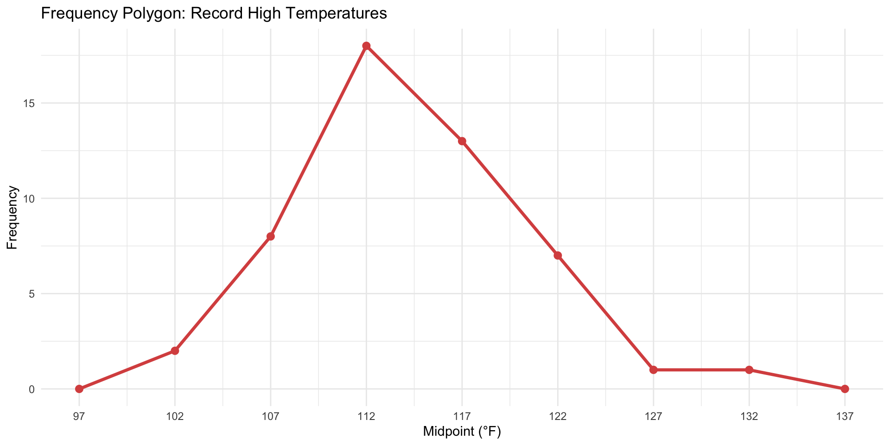
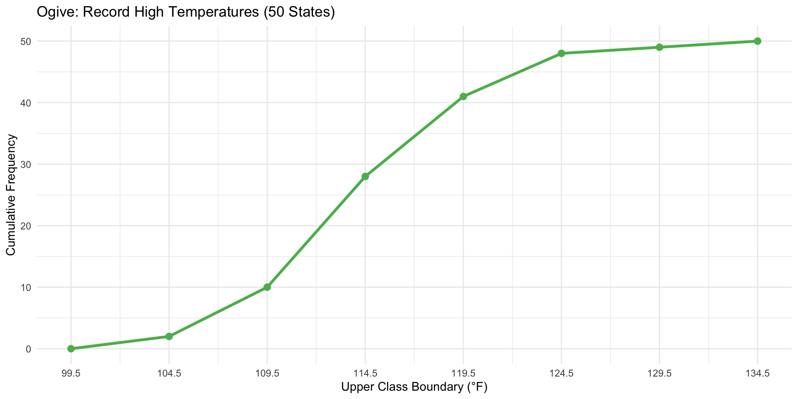
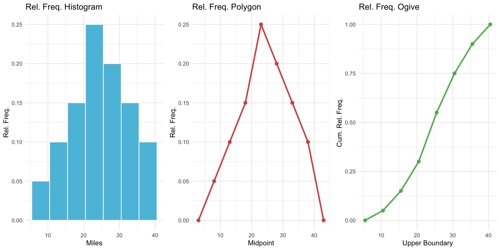
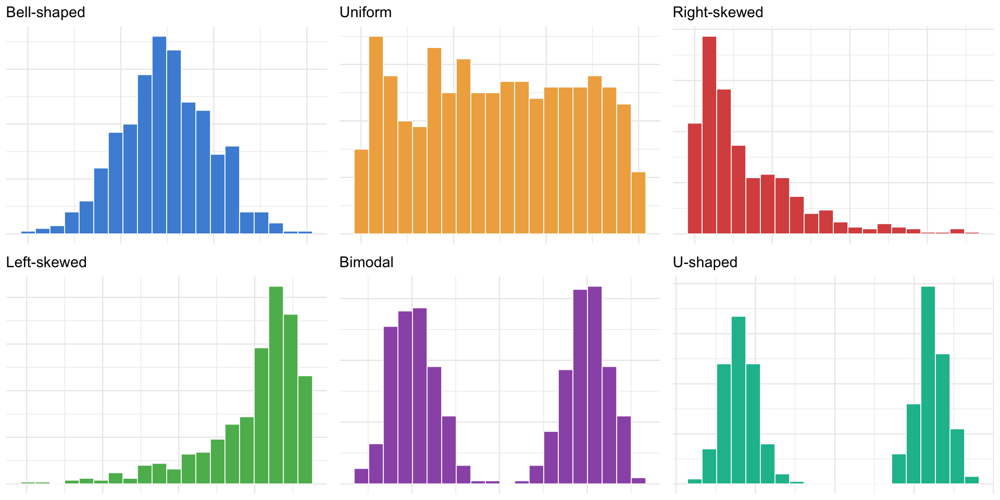
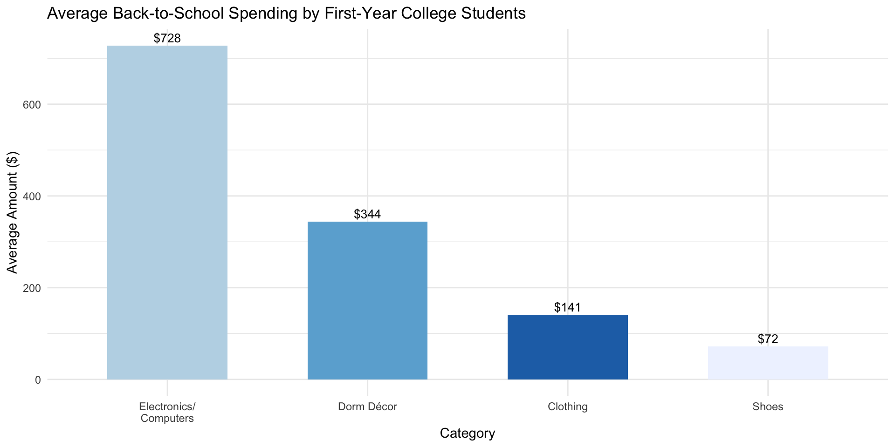
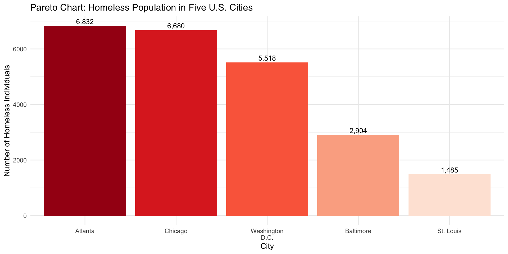
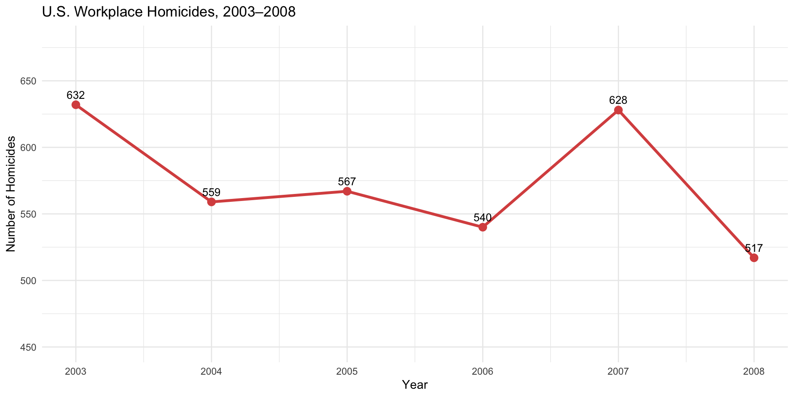
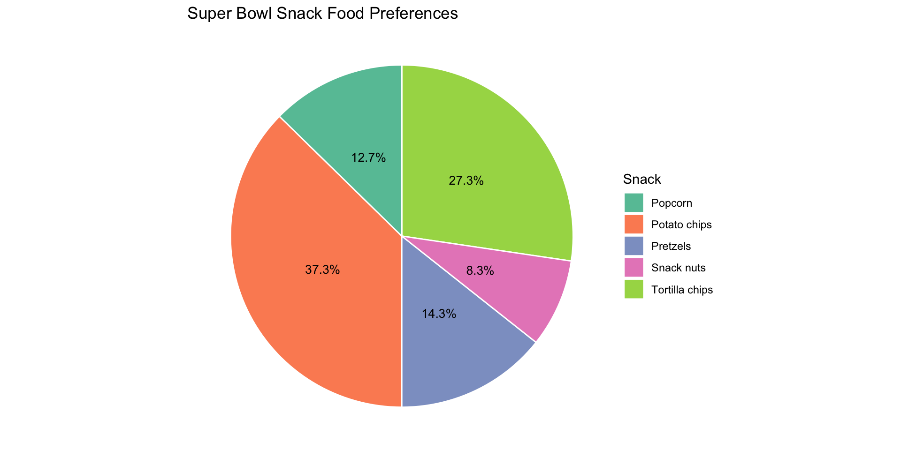

| Class | Frequency | Percentage |
|---|---|---|
| A | 5 | 20 |
| AB | 4 | 16 |
| B | 7 | 28 |
| O | 9 | 36 |
Statistics
Chapter 2: Frequency Distributions and Graphs
Yu-You Liou
Shih Chien University
2026-05-31
Section 2-1: Organizing Data
From Raw Data to Organized Information
When data are first gathered, they exist in raw form — an unordered, unprocessed list of values. On their own, raw data reveal very little about the underlying patterns or trends in a dataset.
Organizing data into a frequency distribution provides a structured summary that makes patterns visible and analysis manageable.
Frequency Distribution
A frequency distribution is a table that organizes data values (or ranges of values) along with the count of how often each value or range occurs in the dataset.
Categorical Frequency Distributions
When data consist of qualitative categories (non-numeric labels or groups), a categorical frequency distribution is used. Each category is listed alongside its frequency and relative frequency (percentage).
Steps to construct a categorical frequency distribution:
- List each distinct category.
- Tally the occurrences of each category.
- Record the frequency and compute the percentage: \(\% = \frac{f}{n} \times 100\)
Example 2-1: Blood Types of Army Inductees
Example 2-1
A sample of 25 army inductees was tested for blood type. The results are shown below. Organize the data into a categorical frequency distribution.
A B B AB O
O O B AB B
B B O A O
A O O O AB
AB A O B AExample 2-1: Solution
Example 2-1: Interpretation
The frequency distribution reveals that Type O is the most common blood type in this sample, occurring 9 times (36%). Type A appears 5 times (20%), Type B appears 6 times (24%), and Type AB appears 4 times (16%).

Grouped Frequency Distributions
When dealing with quantitative data that span a wide range of values, individual values are grouped into classes (intervals). The resulting table is called a grouped frequency distribution.
Key terminology:
- Class limits: The smallest (lower) and largest (upper) values that can belong to a class.
- Class boundaries: Values halfway between the upper limit of one class and the lower limit of the next, eliminating gaps.
- Class width: The difference between consecutive lower class limits (or upper class boundaries).
- Class midpoint: \(X_m = \dfrac{\text{lower limit} + \text{upper limit}}{2}\)
Rules for Constructing a Grouped Frequency Distribution
Six Construction Guidelines
- Use between 5 and 20 classes — enough to show pattern without excessive detail.
- The class width should be an odd number when possible so midpoints are whole numbers.
- Classes must be mutually exclusive — each data value belongs to exactly one class.
- Classes must be continuous — no gaps between classes, even if some classes have zero frequency.
- Classes must be exhaustive — every data value must fit into some class.
- Classes should be equal in width (except possibly the first or last class).
Formula: \(\text{Class width} \approx \dfrac{\text{highest value} - \text{lowest value}}{\text{number of classes}}\)
Example 2-2: Record High Temperatures
Example 2-2
The record high temperatures (°F) for each of the 50 U.S. states are listed below. Construct a grouped frequency distribution using 7 classes.
112 100 127 120 134 118 105 110 109 112
110 118 117 116 118 122 114 114 105 109
107 112 114 115 118 117 118 122 106 110
116 108 110 121 113 120 119 111 104 111
120 113 120 117 105 110 118 112 114 114Example 2-2: Solution
Prepare data
Draw the figure
# Class width = ceiling((134 - 100) / 7) = 5
breaks <- seq(99.5, 134.5, by = 5)
labels <- c("100-104","105-109","110-114","115-119","120-124","125-129","130-134")
freq_table <- data.frame(temps) |>
mutate(Class = cut(temps, breaks = breaks, labels = labels)) |>
count(Class, .drop = FALSE) |>
rename(Frequency = n) |>
mutate(
Boundaries = c("99.5-104.5","104.5-109.5","109.5-114.5",
"114.5-119.5","119.5-124.5","124.5-129.5","129.5-134.5"),
Midpoint = seq(102, 132, by = 5),
Cumulative = cumsum(Frequency)
)Output
| Class | Boundaries | Midpoint | Frequency | Cumulative |
|---|---|---|---|---|
| 100-104 | 99.5-104.5 | 102 | 2 | 2 |
| 105-109 | 104.5-109.5 | 107 | 8 | 10 |
| 110-114 | 109.5-114.5 | 112 | 18 | 28 |
| 115-119 | 114.5-119.5 | 117 | 13 | 41 |
| 120-124 | 119.5-124.5 | 122 | 7 | 48 |
| 125-129 | 124.5-129.5 | 127 | 1 | 49 |
| 130-134 | 129.5-134.5 | 132 | 1 | 50 |
Example 2-2: Visualization

Ungrouped Frequency Distributions
When the range of values is small and each distinct value is meaningful on its own, an ungrouped (single-value) frequency distribution lists each individual data value as its own class.
This approach preserves the exact values rather than collapsing them into intervals.
Example 2-3: Miles per Gallon for SUVs
Example 2-3
The fuel economy ratings (mpg) for a sample of 30 sport utility vehicles are listed below. Construct an ungrouped frequency distribution.
12 17 12 14 16 18 16 18 12 16
15 15 16 12 15 15 16 16 12 14
15 12 15 15 12 16 15 16 16 12Example 2-3: Solution
Prepare data
Draw the figure
Output
| MPG | Frequency | Rel. Freq. | Cum. Freq. |
|---|---|---|---|
| 12 | 8 | 0.267 | 8 |
| 14 | 2 | 0.067 | 10 |
| 15 | 8 | 0.267 | 18 |
| 16 | 9 | 0.300 | 27 |
| 17 | 1 | 0.033 | 28 |
| 18 | 2 | 0.067 | 30 |
The distribution shows that 15 mpg and 16 mpg are the most frequent ratings in this sample.
Cumulative Frequency Distributions
A cumulative frequency distribution shows the running total of frequencies from the lowest class up through each successive class. It answers the question: “How many observations fall at or below this value?”
| Class | Frequency | Cumulative Frequency |
|---|---|---|
| 100-104 | 2 | 2 |
| 105-109 | 8 | 10 |
| 110-114 | 18 | 28 |
| 115-119 | 13 | 41 |
| 120-124 | 7 | 48 |
| 125-129 | 1 | 49 |
| 130-134 | 1 | 50 |
Section 2-2: Histograms, Frequency Polygons, and Ogives
Graphing Grouped Frequency Distributions
Three fundamental graphs are used to visualize data organized in a grouped frequency distribution:
- Histogram — bars whose heights represent frequencies (or relative frequencies), with no gaps between bars.
- Frequency polygon — a line graph connecting the midpoints of each class at their frequency values; extended to the x-axis at each end.
- Ogive (oh-jive) — a cumulative frequency graph; shows the running total of observations up to each class boundary.
The Histogram
Histogram
A histogram is a bar graph in which the horizontal axis represents the class boundaries and the vertical axis represents the frequencies (or relative frequencies). Adjacent bars share boundaries — there are no gaps.
Example 2-4: Histogram of Record High Temperatures
Example 2-4
Using the frequency distribution from Example 2-2, draw a histogram for the record high temperatures of the 50 U.S. states.
ggplot(data.frame(temps), aes(x = temps)) +
geom_histogram(breaks = breaks, fill = "#4a90d9", color = "white", linewidth = 0.8) +
scale_x_continuous(breaks = c(99.5, 104.5, 109.5, 114.5, 119.5, 124.5, 129.5, 134.5)) +
labs(title = "Histogram: Record High Temperatures (50 States)",
x = "Temperature (°F)", y = "Frequency") +
theme_minimal()The Frequency Polygon
Frequency Polygon
A frequency polygon is a line graph drawn by connecting the midpoints of the tops of each histogram bar. The line is extended to the x-axis one class width beyond each end, so the polygon is “closed.”
Example 2-5: Frequency Polygon
Example 2-5
Draw a frequency polygon for the record high temperatures data from Example 2-2.

The Ogive
Ogive
An ogive (cumulative frequency graph) plots the upper class boundaries on the x-axis against the cumulative frequencies on the y-axis. It is useful for determining how many observations fall below a particular value.
Example 2-6: Ogive for Record High Temperatures
Example 2-6
Draw an ogive for the record high temperatures distribution from Example 2-2.
ggplot(ogive_df, aes(x, y)) +
geom_line(color = "#5cb85c", linewidth = 1.2) +
geom_point(color = "#5cb85c", size = 2.5) +
scale_x_continuous(breaks = upper_bounds) +
labs(title = "Ogive: Record High Temperatures (50 States)",
x = "Upper Class Boundary (°F)", y = "Cumulative Frequency") +
theme_minimal()
Relative Frequency Graphs
All three graph types (histogram, frequency polygon, ogive) can be redrawn using relative frequencies (proportions or percentages) instead of raw counts. The shape of the graph is identical, but the vertical axis reflects the fraction of total observations rather than the count.
Relative frequency graphs facilitate comparisons between datasets of different sizes.
Example 2-7: Relative Frequency Graphs — Miles Run per Week
Example 2-7
A survey of 20 runners recorded the number of miles each ran per week. The data are organized into the frequency distribution below. Draw a relative frequency histogram, frequency polygon, and ogive.
| Class | Frequency |
|---|---|
| 5.5–10.5 | 1 |
| 10.5–15.5 | 2 |
| 15.5–20.5 | 3 |
| 20.5–25.5 | 5 |
| 25.5–30.5 | 4 |
| 30.5–35.5 | 3 |
| 35.5–40.5 | 2 |
Example 2-7: Solution
Prepare data
Draw the figure
p1 <- ggplot(run_df, aes(x = mid, y = rel_f)) +
geom_bar(stat = "identity", width = 5, fill = "#5bc0de", color = "white") +
labs(title = "Rel. Freq. Histogram", x = "Miles", y = "Rel. Freq.") +
theme_minimal(base_size = 10)
p2 <- ggplot(
data.frame(x = c(3, run_df$mid, 43), y = c(0, run_df$rel_f, 0)),
aes(x, y)
) +
geom_line(color = "#d9534f", linewidth = 1) +
geom_point(color = "#d9534f", size = 2) +
labs(title = "Rel. Freq. Polygon", x = "Midpoint", y = "Rel. Freq.") +
theme_minimal(base_size = 10)
p3 <- ggplot(
data.frame(
x = c(5.5, run_df$upper),
y = c(0, run_df$cum_rf)
),
aes(x, y)
) +
geom_line(color = "#5cb85c", linewidth = 1) +
geom_point(color = "#5cb85c", size = 2) +
labs(title = "Rel. Freq. Ogive", x = "Upper Boundary", y = "Cum. Rel. Freq.") +
theme_minimal(base_size = 10)Output

Distribution Shapes
The overall shape of a distribution describes how data values are spread across the range. Recognizing shape helps in choosing appropriate statistical methods.
| Shape | Description |
|---|---|
| Bell-shaped | Symmetric, single peak in the center; tapers evenly on both sides |
| Uniform | Flat; all values occur with roughly equal frequency |
| Right-skewed | Tail extends to the right; most data concentrated on the left |
| Left-skewed | Tail extends to the left; most data concentrated on the right |
| J-shaped | Frequencies increase steadily from left to right |
| Reverse J-shaped | Frequencies decrease steadily from left to right |
| Bimodal | Two distinct peaks; may indicate two subgroups in the data |
| U-shaped | Frequencies high at both ends, low in the middle |
Visualizing Distribution Shapes
set.seed(42)
make_hist <- function(data, title, fill_col) {
ggplot(data.frame(x = data), aes(x)) +
geom_histogram(bins = 20, fill = fill_col, color = "white", linewidth = 0.3) +
labs(title = title, x = NULL, y = NULL) +
theme_minimal(base_size = 9) +
theme(axis.text = element_blank())
}
p_bell <- make_hist(rnorm(500, 50, 10), "Bell-shaped", "#4a90d9")
p_uni <- make_hist(runif(500, 20, 80), "Uniform", "#f0ad4e")
p_right <- make_hist(rexp(500, 0.05), "Right-skewed", "#d9534f")
p_left <- make_hist(80 - rexp(500, 0.05), "Left-skewed", "#5cb85c")
p_bimod <- make_hist(c(rnorm(250,30,5), rnorm(250,70,5)), "Bimodal", "#9b59b6")
p_u <- make_hist(c(rnorm(200,20,5), rnorm(200,80,5)), "U-shaped", "#1abc9c")
Section 2-3: Other Types of Graphs
Beyond the Histogram
In addition to histograms, frequency polygons, and ogives, several other graphical tools are widely used in statistics and everyday data communication:
- Bar graphs — for comparing frequencies of categorical data
- Pareto charts — bar graphs with bars sorted from highest to lowest frequency
- Time series graphs — for tracking a variable’s change over time
- Pie graphs — for showing each category’s share of the whole
- Stem and leaf plots — for displaying the actual data values in a graphical form
Bar Graphs
Bar Graph
A bar graph represents categorical (qualitative) data using horizontal or vertical bars. The length or height of each bar corresponds to the frequency or value for that category. Unlike a histogram, gaps between bars are acceptable.
Example 2-8: First-Year College Student Spending
Example 2-8
A survey of first-year college students reported average spending in four back-to-school categories. Represent the data with a bar graph.
| Category | Average Spending |
|---|---|
| Electronics/Computers | $728 |
| Dorm Décor | $344 |
| Clothing | $141 |
| Shoes | $72 |
Example 2-8: Solution
ggplot(spending, aes(x = reorder(category, -amount), y = amount, fill = category)) +
geom_bar(stat = "identity", show.legend = FALSE, width = 0.6) +
geom_text(aes(label = paste0("$", amount)), vjust = -0.4, size = 3.5) +
scale_fill_brewer(palette = "Blues", direction = -1) +
labs(title = "Average Back-to-School Spending by First-Year College Students",
x = "Category", y = "Average Amount ($)") +
theme_minimal()
Pareto Charts
Pareto Chart
A Pareto chart is a specialized bar graph in which the categories are arranged in descending order of frequency. It is particularly useful for identifying which categories account for the largest share of the total — a key concept in quality control and decision-making.
The name honors Vilfredo Pareto, who observed that a small number of causes often account for the majority of effects (the “80/20 rule”).
Example 2-9: Homeless Population in Five Cities
Example 2-9
The estimated number of homeless individuals in five U.S. cities is given below. Construct a Pareto chart.
| City | Count |
|---|---|
| Atlanta | 6,832 |
| Chicago | 6,680 |
| Washington, D.C. | 5,518 |
| Baltimore | 2,904 |
| St. Louis | 1,485 |
Example 2-9: Solution
ggplot(homeless, aes(x = city, y = count, fill = city)) +
geom_bar(stat = "identity", show.legend = FALSE) +
geom_text(aes(label = scales::comma(count)), vjust = -0.4, size = 3.5) +
scale_fill_brewer(palette = "Reds", direction = -1) +
labs(title = "Pareto Chart: Homeless Population in Five U.S. Cities",
x = "City", y = "Number of Homeless Individuals") +
theme_minimal()
Time Series Graphs
Time Series Graph
A time series graph plots a quantitative variable on the vertical axis against time on the horizontal axis. The data points are connected by line segments to emphasize trend or pattern over time.
Example 2-10: Workplace Homicides (2003–2008)
Example 2-10
The number of workplace homicides reported in the United States for the years 2003 through 2008 is shown below. Draw a time series graph and describe the trend.
| Year | 2003 | 2004 | 2005 | 2006 | 2007 | 2008 |
|---|---|---|---|---|---|---|
| Homicides | 632 | 559 | 567 | 540 | 628 | 517 |
Example 2-10: Solution
homicides <- data.frame(
year = 2003:2008,
count = c(632, 559, 567, 540, 628, 517)
)
fig <- ggplot(homicides, aes(x = year, y = count)) +
geom_line(color = "#d9534f", linewidth = 1.2) +
geom_point(color = "#d9534f", size = 3) +
geom_text(aes(label = count), vjust = -0.8, size = 3.5) +
scale_x_continuous(breaks = 2003:2008) +
ylim(450, 680) +
labs(title = "U.S. Workplace Homicides, 2003–2008",
x = "Year", y = "Number of Homicides") +
theme_minimal()
The overall trend shows a general decline in workplace homicides over this period, with a notable spike in 2007.
Pie Graphs
Pie Graph
A pie graph (pie chart) is a circle divided into sectors, where each sector represents a category. The size of each sector is proportional to that category’s share of the total.
Formula for sector angle: \[\text{Degrees} = \frac{f}{n} \times 360°\]
where \(f\) is the category frequency and \(n\) is the total number of observations.
Example 2-11: Super Bowl Snack Food Preferences
Example 2-11
A survey of Super Bowl viewers recorded their preferred snack foods. Construct a pie graph.
| Snack | Frequency |
|---|---|
| Potato chips | 11.2 million |
| Tortilla chips | 8.2 million |
| Pretzels | 4.3 million |
| Popcorn | 3.8 million |
| Snack nuts | 2.5 million |
Example 2-11: Solution
snacks <- data.frame(
item = c("Potato chips","Tortilla chips","Pretzels","Popcorn","Snack nuts"),
freq = c(11.2, 8.2, 4.3, 3.8, 2.5)
) |>
mutate(
pct = freq / sum(freq) * 100,
label = paste0(item, "\n", round(pct, 1), "%")
)
fig <- ggplot(snacks, aes(x = "", y = freq, fill = item)) +
geom_bar(stat = "identity", width = 1, color = "white") +
coord_polar(theta = "y") +
geom_text(aes(label = paste0(round(pct, 1), "%")),
position = position_stack(vjust = 0.5), size = 3.5) +
scale_fill_brewer(palette = "Set2") +
labs(title = "Super Bowl Snack Food Preferences", fill = "Snack") +
theme_void()
Example 2-12: Blood Type Pie Graph
Example 2-12
Using the blood type data from Example 2-1, construct a pie graph.
blood_pie <- data.frame(
type = c("A","B","O","AB"),
freq = c(5, 6, 9, 4)
) |>
mutate(
pct = freq / sum(freq) * 100,
deg = pct / 100 * 360,
label = paste0(type, "\n", freq, " (", round(pct, 1), "%)")
)
fig <- ggplot(blood_pie, aes(x = "", y = freq, fill = type)) +
geom_bar(stat = "identity", width = 1, color = "white") +
coord_polar(theta = "y") +
geom_text(aes(label = paste0(type, "\n", round(pct, 1), "%")),
position = position_stack(vjust = 0.5), size = 4) +
scale_fill_manual(values = c("#4a90d9","#d9534f","#5cb85c","#f0ad4e")) +
labs(title = "Blood Type Distribution (n = 25)", fill = "Blood Type") +
theme_void()
Misleading Graphs
Caution: Graphs Can Mislead
Graphs are powerful communication tools, but they can distort perception. Common misleading techniques include:
- Truncating the y-axis — starting the vertical axis at a value other than zero exaggerates differences between bars or points.
- Using two-dimensional images for one-dimensional changes — the eye compares areas rather than heights, making small differences appear dramatic.
- Omitting axis labels or units — without a labeled y-axis, there is no way to gauge the actual magnitude of differences.
Always examine the scale and labels carefully before drawing conclusions from a graph.
Stem and Leaf Plots
Stem and Leaf Plot
A stem and leaf plot (stemplot) organizes data by splitting each value into a stem (the leading digit(s)) and a leaf (the trailing digit). This technique preserves the actual data values while displaying them in a graphical form that reveals the shape of the distribution.
- Each row represents one stem (class).
- Leaves within each row are arranged in ascending order.
- The plot functions like a histogram turned on its side.
Example 2-13: Cardiograms at an Outpatient Center
Example 2-13
The number of cardiograms performed each day over 20 days at an outpatient testing center is recorded below. Construct a stem and leaf plot.
25 31 20 32 13
14 43 02 57 23
36 32 33 32 44
32 52 44 51 45Example 2-13: Solution
The decimal point is 1 digit(s) to the right of the |
0 | 2
1 | 34
2 | 035
3 | 1222236
4 | 3445
5 | 127The distribution peaks in the 30s, with 7 of the 20 days recording between 31 and 36 cardiograms. The minimum is 2 and the maximum is 57.
Example 2-14: Car Thefts — Stem and Leaf with Classes
Example 2-14
An insurance researcher recorded the number of car thefts in a city over 30 days. Construct a stem and leaf plot using the classes 50–54, 55–59, 60–64, 65–69, 70–74, 75–79.
52 62 51 50 69 58 77 66 53 57
75 56 55 67 73 79 59 68 65 72
57 51 63 69 75 65 53 78 66 55Example 2-14: Solution
Example 2-15: Back-to-Back Stem and Leaf Plot
Back-to-Back Stem and Leaf Plot
When comparing two related groups, a back-to-back stem and leaf plot uses a shared column of stems in the center, with one group’s leaves fanning left and the other’s fanning right. This makes it easy to compare the shapes, centers, and spreads of both distributions simultaneously.
Example 2-15: Tall Buildings in Atlanta vs. Philadelphia
Example 2-15
The number of stories in samples of tall buildings from Atlanta and Philadelphia are shown. Construct a back-to-back stem and leaf plot and compare the two distributions.
Atlanta: 55, 70, 44, 36, 40, 63, 40, 44, 34, 38, 60, 47, 52, 32, 32, 50, 53, 32, 28, 31, 52, 32, 34, 32, 50, 26, 29
Philadelphia: 61, 40, 38, 32, 30, 58, 40, 40, 25, 30, 54, 40, 36, 30, 30, 53, 39, 36, 34, 33, 50, 38, 36, 39, 32
Example 2-15: Solution
___________________________________________
1 | 2: represents 12, leaf unit: 1
atlanta philly
___________________________________________
986| 2 |5
8644222221| 3 |000022346668899
74400| 4 |0000
532200| 5 |0348
30| 6 |1
0| 7 |
___________________________________________
n: 27 25
___________________________________________Example 2-15: Interpretation
Examining the back-to-back plot reveals several key differences:
- Both distributions peak in the 30-story range, meaning this is the most common height class in both cities.
- Atlanta shows considerably more variability — its buildings range from the upper 20s all the way to 70 stories.
- Philadelphia buildings are more tightly concentrated in the 30–50 story range.
- Atlanta has more buildings of 40 or more stories, indicating a slightly taller skyline in this sample.
Summary
| Graph Type | Best Used For |
|---|---|
| Histogram | Continuous/grouped quantitative data |
| Frequency polygon | Comparing frequency distributions |
| Ogive | Determining how many values fall below a threshold |
| Bar graph | Comparing categories (nominal/ordinal data) |
| Pareto chart | Ranking categories from most to least frequent |
| Time series graph | Tracking change in a variable over time |
| Pie graph | Showing each category’s proportion of the whole |
| Stem and leaf plot | Displaying actual data values; small to moderate datasets |
Key Formulas — Chapter 2
Important Formulas
\[\text{Class width} \approx \frac{\text{highest} - \text{lowest}}{\text{number of classes}}\]
\[X_m = \frac{\text{lower limit} + \text{upper limit}}{2} \quad \text{(class midpoint)}\]
\[\% = \frac{f}{n} \times 100 \quad \text{(percentage for each class)}\]
\[\text{Degrees} = \frac{f}{n} \times 360° \quad \text{(pie chart sector)}\]
Chapter 2: Key Vocabulary
- Raw data — unorganized observations collected before any processing
- Frequency distribution — a table pairing data values/classes with their counts
- Class limits / boundaries / midpoint / width — structural components of a grouped distribution
- Cumulative frequency — running total of frequencies up to and including a class
- Histogram / frequency polygon / ogive — the three standard distribution graphs
- Bar graph / Pareto chart / time series / pie graph — graphs for qualitative or time-based data
- Stem and leaf plot — a data display that retains individual values in graphical form
- Distribution shape — the overall pattern of a frequency distribution (symmetric, skewed, bimodal, etc.)
Acknowledgement
Copyright notice. These teaching materials have been adapted from Bluman, A. G. (2011). Elementary statistics: A step by step approach (8th ed.). McGraw-Hill. All rights are reserved by the original authors and publishers.
Non-commercial use only. These materials are strictly intended for educational purposes and must not be used for commercial gain or profit.
Proper attribution. Any reproduction, distribution, or use of these materials must provide proper attribution to the original source.

Elementary Statistics: A Step by Step Approach